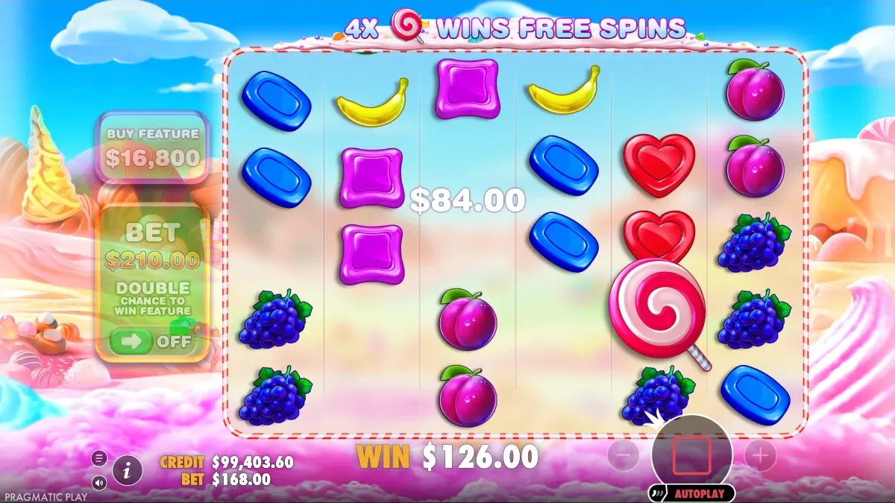

Guides
How the Sweet Bonanza Tumble Actually Pays
There are no paylines in Sweet Bonanza. Eight matching symbols anywhere on the grid pay, disappear and get replaced — and that single rule explains most of what the game does to a bankroll.
🔞 18+ only · Real-money gambling

Sweet Bonanza has no paylines. The 6×5 grid is evaluated as a single pool: if eight or more of the same symbol are anywhere on screen, they pay, regardless of where they sit. That is the whole rule, and everything else in the game is built on top of it.
What happens on a paid spin
A win does not end the spin. The paid symbols are removed, the ones above fall into the gap, and fresh symbols drop in from the top. The grid is then evaluated again with the same eight-symbol rule. This repeats until a drop produces nothing, at which point the round closes and the total is paid.
Why chains feel shorter than they look
Each tumble is a fresh draw. Clearing eight symbols opens eight new slots — it does not tilt the next evaluation in your favour. A four- or five-step chain is genuinely rare, and the clips you see of them are the survivors of a lot of spins that stopped at one.
Symbol values are lopsided
The paytable splits sharply between fruit and candy. The low-value fruit fills the grid and produces most of the qualifying groups; the candy and the red heart sit at the top and are what a big base-game round is actually made of.
Symbol group | Role in a session | How often it clears |
|---|---|---|
Banana, grape, plum, apple, watermelon | Small, frequent returns that hold the balance steady | Most paid spins |
Blue and green candy | Mid-size wins, usually where a decent base round tops out | Regularly |
Purple candy and red heart | The premium groups behind the screenshots | Rarely, and rarely with 12+ on screen |
Group size matters as much as symbol value: the paytable steps up at 8, 10 and 12 matching symbols, so a twelve-symbol group of fruit can beat an eight-symbol group of candy.
Scatter pays remove the "so close" near-miss of a payline slot. Nothing lands one position short — either eight are there or they are not.
What this means for a session
Wins arrive often but small. The balance moves in a slow drift down punctuated by short recoveries.
The real payouts live in the free spins round, not in the base game. Size your stake so you can still be playing when it triggers.
A long dry run is normal and carries no information about what comes next — each spin is independently generated.
The tumble is easier to read than to describe. Watch a dozen rounds in the free demo on the front page, and check the published figures in the RTP and volatility breakdown before you play for money.